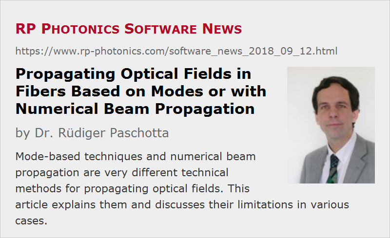

Propagating Optical Fields in Fibers Based on Modes or with Numerical Beam Propagation
Posted on 2018-09-12 in the RP Photonics Software News (available as e-mail newsletter!)
Permanent link: https://www.rp-photonics.com/software_news_2018_09_12.html
Author: Dr. Rüdiger Paschotta, RP Photonics Consulting GmbH
Abstract: Mode-based techniques and numerical beam propagation are very different technical methods for propagating optical fields. This article explains them and discusses their limitations in various cases.

In many cases, one needs to calculate how some optical field with a certain transverse profile propagates through a medium, e.g. an optical fiber.
Clearly, simple power propagation cannot be used, if we need the full transverse profiles. There are fundamentally different numerical approaches which can be used:
Mode-based Approach
Here, we first calculate the modes of the fiber – usually, only considering guided modes. For each of those modes, we can calculate a complex amplitude simply with an overlap integral which contains both the initial field and the mode amplitude function. Thereafter, we multiply each mode amplitude with a phase factor; the phase delay is simply the phase constant (β value) of that mode (which a mode solver like that in RP Fiber Power will tell us) times the propagation distance. We can then assemble the total field as a superposition of the mode functions, using the modified mode amplitudes.
Mode -dependent propagation losses can of course also be easily be taken into account – simply in the form of complex propagation constants.
Numerical Beam Propagation
A completely different approach is numerical beam propagation. Here, we use a numerical algorithm which can calculate the field after some small propagation distance with a reasonable accuracy. By performing many such steps subsequently, one can obtain propagation over larger distances.
There are different algorithms for beam propagation. Some are based on finite-element methods or similar, while others are based on Fourier transforms (split-step Fourier method). Technically, this is a difficult topic, but some software (e.g. RP Fiber Power) provides such features which are then reasonably simple to use. One challenge can be to determent reasonable parameters for the numerical grid; I have covered that in the RP Photonics Software News of 2018-08-02.
A Comparison
In the following, I discuss various aspects which in a concrete case can favor one method or exclude another one.
Large Propagation Distances
Obviously, the computational effort of the mode-based approach does not depend on the propagation distance. It is only that for long distances small errors in the phase constants of the modes become more critical. This is not just a numerical issue: any real fiber will exhibit some fluctuations of its parameters and therefore of its phase constants. Therefore, the precise outcome cannot be predicted any more for a large propagation distance.
For numerical beam propagation, propagation distances of many meters in a fiber can become problematic, since a large number of numerical steps is required. Particularly for small-core fibers with high numerical aperture, the numerical step size needs to be rather small (often only a few micrometers), and millions of steps as required for several meters may challenge your patience. There can be also a problem with computer memory, if you need to store the amplitude profiles for all intermediate steps. Frequently, however, at least the latter problem can be easily solved by storing the fields only on a relatively coarse numerical grid.
Cladding Modes
In many cases, we can safely ignore cladding modes of the fiber, assuming that their losses over the relevant propagation distance are very high. For the mode-based approach this is very nice, since we have to deal with a usually quite limited number of modes. Four numerical beam propagation, it means that we have to consider only a relatively small volume, not extending that much beyond the fiber core. One should then simply include some artificial loss in the cladding area in order to get light removed from there. Otherwise, it would be reflected at the outer boundaries of the numerical grid and would thus produce artifacts.
Sometimes, however, cladding modes are relevant. For the mode-based approach, this can be a serious problem: we have to calculate all the cladding modes as well, and that can dramatically increase the number of modes, possibly even making the whole approach no longer feasible.
For numerical beam propagation, we simply have to extend the numerical grid such that it covers the full cladding area and also extends somewhat into the coating (or air). The price to pay is simply that we are dealing with a larger grid, requiring more memory and computation time.
Bending of the Fiber
If a fiber is bent, that breaks its radial symmetry. As a result, simple LP mode solvers can no longer be used. There are more sophisticated numerical mode solvers, which not every software offers, and which are computationally more demanding.
For numerical beam propagation, bending is relatively simple to include. Its effect can be simulated as a modification of the refractive index profile with an addition which is proportional e.g. to the x coordinate. A proper choice of the proportionality constant can be used to take into account the effect of mechanical stress as well.

Inhomogeneous Fibers
Some fibers have properties which change along the length. For example, there are tapered fibers, where the core diameter varies gradually. Other fibers contain things like fiber Bragg gratings, e.g. long-period gratings which do not cause reflections but mode coupling – for example, coupling light from a guided mode into cladding modes.
The mode-based approach is usually not usable in such cases; it is not even obvious how to sensibly define modes of such structures. Well, there are specialized software products with sophisticated algorithms which are still usable at least for some of those problems. Personally, I do not have experience with that.
Numerical beam propagation is most flexible. Here, it is no problem to make the refractive index not only dependent on a radial coordinate r, or more generally on x and y, but also on the longitudinal coordinate z. Therefore, it is easy to investigate light propagation in tapered fibers, for example, or even fibers with random fluctuations of the core diameter. It is also not a problem to include a fiber Bragg grating.
Nonlinear Effects
Particularly in the context of optical pulses, which can have substantial peak powers, fibers nonlinearities can become quite relevant. One might think that a mode-based approach is that no longer usable, but often it still is. For example, one can iteratively calculate the modified modes of a fiber at a high optical power level; I have done this in a demo file for our software.
On the other hand, numerical beam propagation methods are again quite flexible. It is not too difficult to integrate optical nonlinearities. I have done that not only for the Kerr nonlinearity, leading to self-phase modulation and cross-phase modulation, but even for stimulated Raman scattering.
Time-dependent Fields
Sometimes it is necessary to include the time dependence of optical fields. For the mode-based approach, this simply means that the mode amplitudes become time-dependent.
For numerical beam propagation, it is also possible to introduce time dependencies, but note that the computational effort and memory requirements may easily explode: everything is multiplied with the number of temporal steps. Therefore, this is often not practical, or at least rather time-consuming and memory-intensive.
Anyway, not all is lost when time dependencies become important. There are cases where one investigates the nonlinear propagation of a nanosecond optical pulse, for example, by doing the propagation for several power levels corresponding to different temporal locations in the pulse, and then combining the obtained results. If the pulse duration is much longer than the group delay difference within the pulse spectrum, that can be a quite practical and efficient method.
Conclusions
You see that different numerical methods have crucial advantages and limitations. Depending on what exactly you need to simulate, some method may be superior, or even the only usable one. Obviously, one should not start simulations before knowing what exactly should be investigated, and which assumptions are allowed.
Our software RP Fiber Power supports both methods. Frequently, we even use both of them in a single simulation. For example, there are cases where we use calculated mode fields as inputs to numerical beam propagation. Also, we can calculate the mode amplitudes and powers along the fiber through overlap integrals involving the numerically calculated profiles and the mode profiles.
By the way, for the implementation of many tricks, some of which I mentioned above, it is essential that the used software is highly flexible. I think the only practical way to obtain this is using a powerful script language as supported by our software. The above mentioned demo file with self-focusing is a good example. With a couple of lines of script code, you can implement sophisticated strategies (or get that code from me within the technical support); otherwise, you would depend on very specialized features in the software, which are usually not available.
This article is a posting of the RP Photonics Software News, authored by Dr. Rüdiger Paschotta. You may link to this page, because its location is permanent.
Note that you can also receive the articles in the form of a newsletter or with an RSS feed.
|  |
If you like this article, share it with your friends and colleagues, e.g. via social media:
These sharing buttons are implemented in a privacy-friendly way!